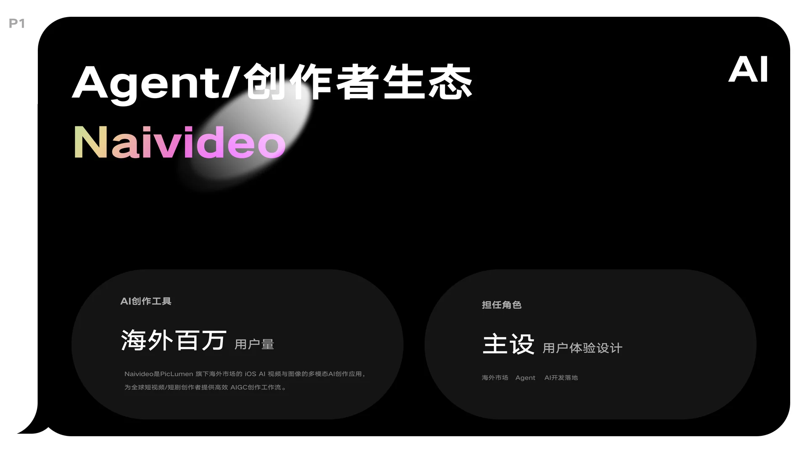
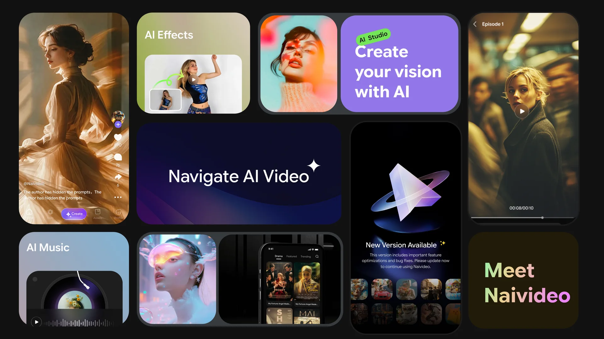
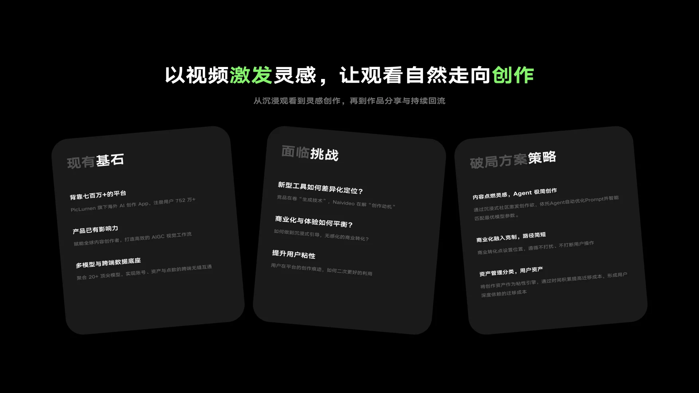
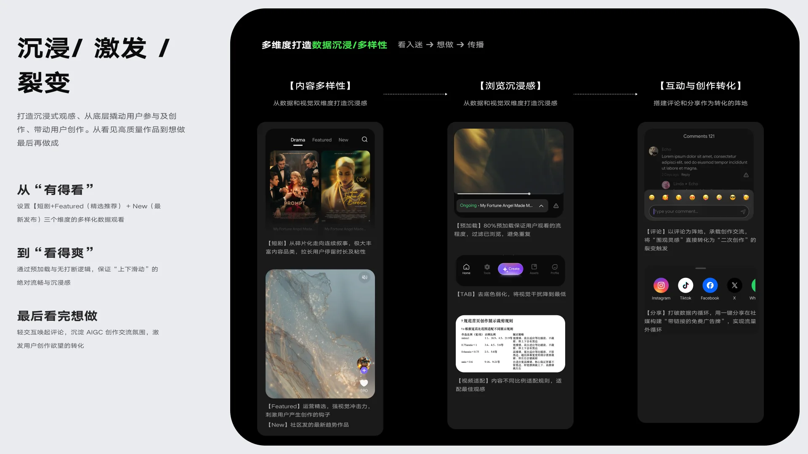
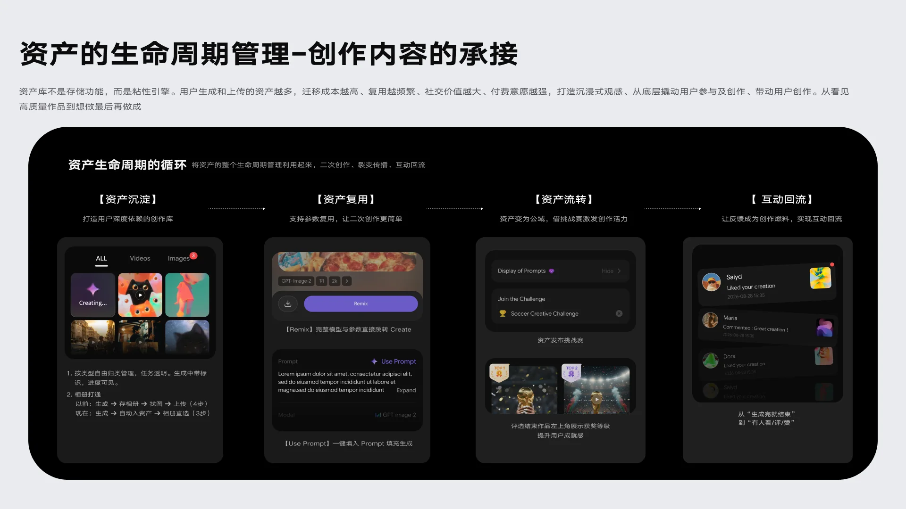
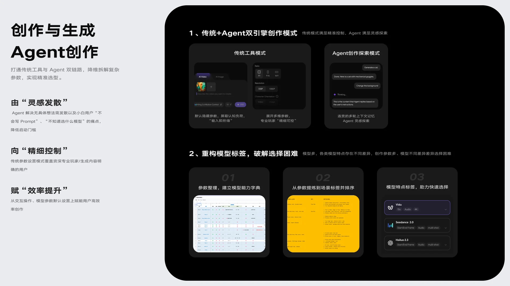
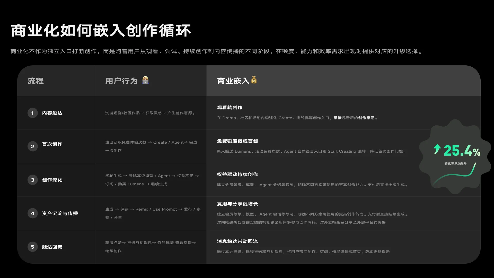
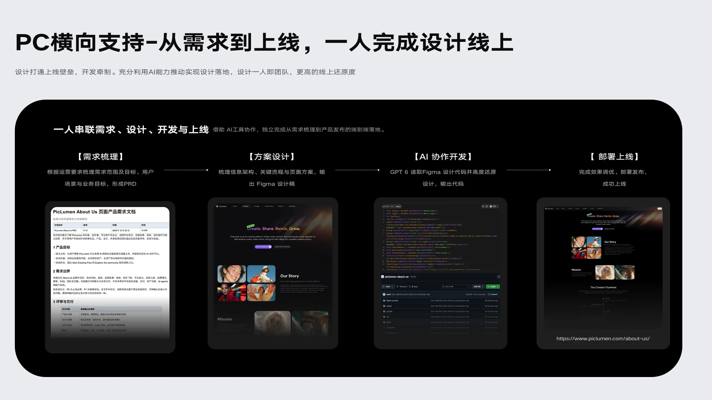

Selected work · 05 / 14
Naivideo
海外百万用户量的 AI 视频创作 App，一个人主设从沉浸观看到 Agent 创作，重构「内容 — 创作 — 资产 — 商业化」闭环，PC 端由设计独立完成并交付上线。

01 — 项目概览

02 — 产品全景

03 — 现状 · 挑战 · 策略

04 — 沉浸 / 激发 / 裂变

05 — 资产的生命周期

06 — 创作与生成

07 — 商业化嵌入创作循环

08 — PC 横向支持